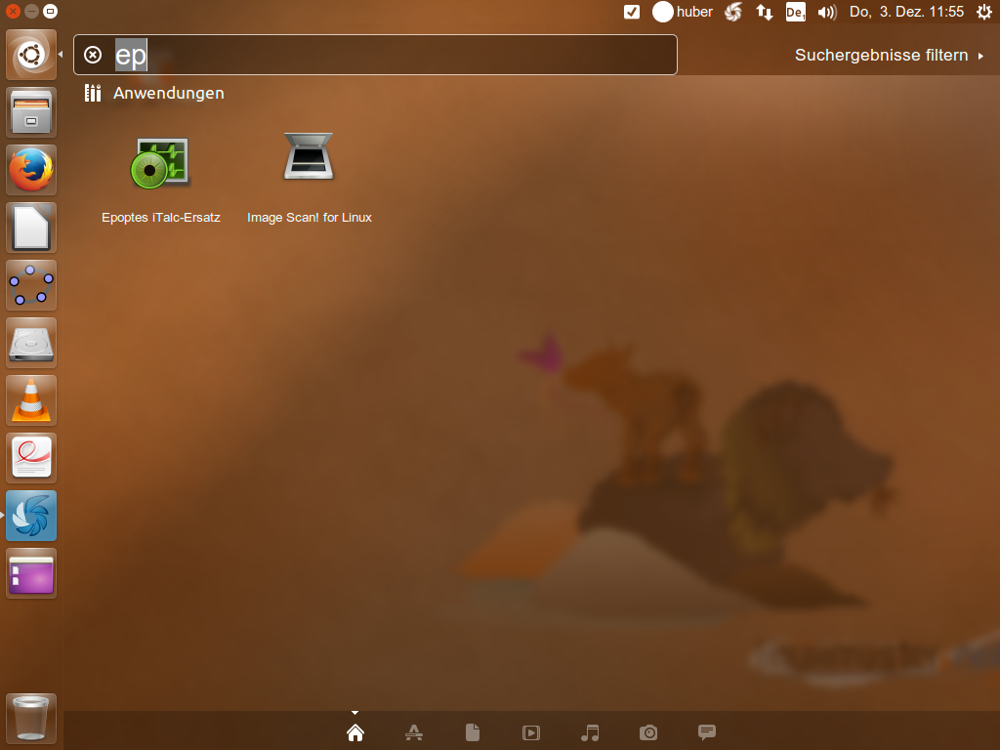

Computer überwachen mit iTalc oder Epoptes¶
Italc¶
Wenn Sie und ihre Schüler in einer reinen Windowsumgebung (z.B. in R218) arbeiten, dann können Sie mit Italc die Aktivitäten der Schüler an ihren Rechnern verfolgen. Verwendung und Aussehen sind der von Epoptes gleich (siehe dazu den nächsten Punkt). Sie sollten allerdings damit rechnen, dass Italc recht behäbig reagiert und im Ganzen recht langsam arbeitet, da die Weiterentwicklung des Programms bereits vor einigen Jahren eingestellt wurde. Wenn Sie also die Aktivitäten ihrer Schüler beobachten wollen, den Bildschirminhalt der Schüler auf den Beamer projizieren wollen etc., sollten Sie in Erwägung ziehen, mit den Linuxclients zu arbeiten und Epoptes verwenden.
Epoptes¶
Wenn Sie mit den Ubuntu-Clients arbeiten, steht Ihnen eine Alternative zu dem Programm Italc zur Verfügung, mit dem Sie auf den Windows-Clients die Aktivitäten der Schüler im Auge behalten konnten. Das Programm nennt sich Epoptes und funktioniert im Wesentlichen genauso wie das bekannte Italc. Allerdings ist es wesentlich schneller, stabiler und komfortabler. Sie können das Programm verwenden, um Ubuntu-Clients zu beobachten. Wenn Sie das Programm in R218 verwenden möchten, sollten sie sicherstellen, dass auf allen Rechnern die Ubuntu-Clients gebootet sind. Windowsrechner werden vom Programm nicht erfasst!7.2 Epoptes Wenn Sie mit den Ubuntu-Clients arbeiten, steht Ihnen eine Alternative zu dem Programm Italc zur Verfügung, mit dem Sie auf den Windows-Clients die Aktivitäten der Schüler im Auge behalten konnten. Das Programm nennt sich Epoptes und funktioniert im Wesentliche genauso wie das bekannte Italc. Allerdings ist es wesentlich schneller, stabiler und komfortabler. Allerdings können Sie das Programm nur verwenden, um Ubuntu-Clients zu beobachten. Wenn Sie das Programm in R218 verwenden möchten, sollten sie sicherstellen, dass auf allen Rechnern die Ubuntu-Clients gebootet sind. Windowsrechner werden vom Programm nicht erfasst!
Start des Programms¶
Sie starten das Programm, indem sie auf den Dashbutton links oben klicken und in der dann eingeblendeten Suchmaske die Anfangsbuchstaben des Programms eintippen. Es wird Ihnen dann das Icon des Programms angezeigt, auf das sie klicken, um es zu starten (Ein Klick genügt!!!!)
Verwendung des Programms¶
Nach dem Start des Programms werden ihnen im Hauptfenster alle Clients angezeigt, die das Programm erfasst hat. Sie sehen den Namen des Pcs sowie den Loginnamen des an diesem Rechner angemeldeten Schülers. Wenn Sie die richtigen Namen der Schüler sehen möchten, können sie dies einstellen, in dem sie in der Programmleiste den Menupunkt „Beschriftungen“ wählen und dort auf die Zeile „Zeige wirkliche Namen“ klicken.

In der Menuleiste stehen ihnen nun folgende Funktionen zur Verfügung (von links nach rechts):
- Starte ausgewählte Clients
- Benutzer auf den ausgewählten Clients abmelden
- Ausgewählte Clients neu starten
- Die ausgewählten Clients herunterfahren
- Die Steuerung über den Rechner des gewählten Benutzers übernehmen.
- Sende Bildschirminhalt im Vollbild an die gewählten Clients
- Eigenen Bildschirm an ausgewählte Clients senden
- Alle Broadcasts auf allen Clients stoppen
- Führe eine Befehl auf den ausgewählten Clients aus
- Eine Nachricht an die ausgewählten Clients senden
- Bildschirme der ausgewählten Clients sperren
- Bildschirme der ausgewählten Clients entsperren
- Zeige Informationen zu den ausgewählten Clients